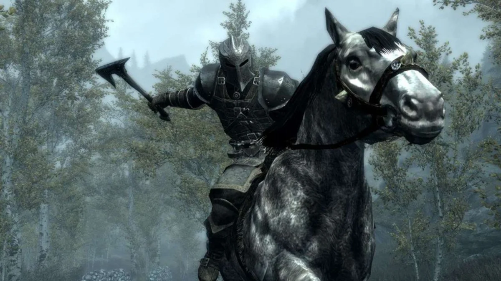
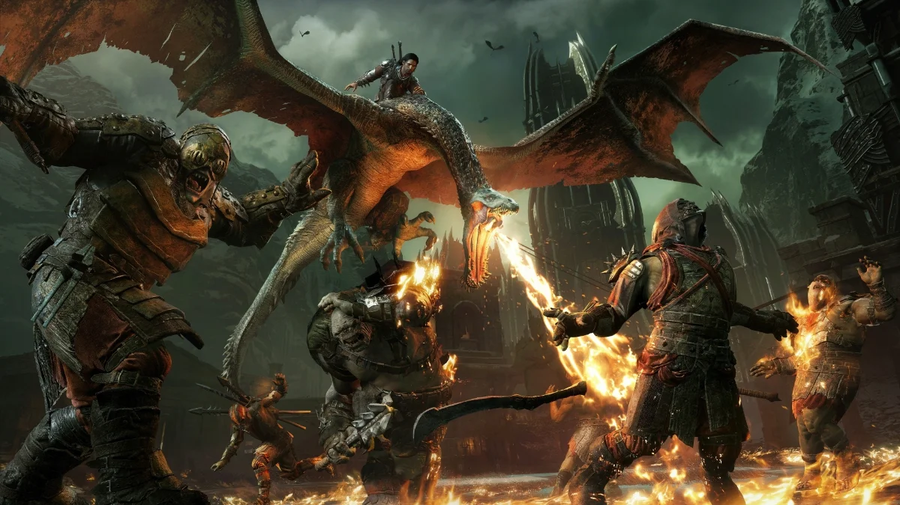
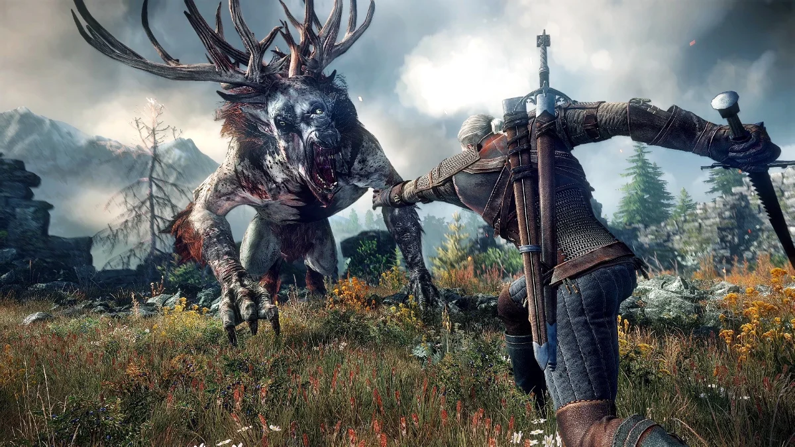

Los mejores juegos de tematica medieval
Pese a haber recorrido las principales plataformas, Skyrim aún no ha aterrizado en Nintendo Switch, una consola que en apenas unos meses se ha convertido en el mayor éxito de la Gran N en muchos años. Afortunadamente, los responsables de la compañía han querido acabar con la incertidumbre y, durante el último Nintendo Direct, han dado a conocer la fecha de lanzamiento definitiva de la quinta entrega numerada de la saga The Elder Scrolls. Será el 17 de noviembre cuando los usuarios de la máquina híbrida puedan adentrarse en la aclamada creación de Bethesda Softworks y disfrutar de una gran aventura medieval.
Sin embargo, este no será el único estreno de esta temática que vea la luz en los próximos meses. En solo unas semanas, La Tierra-Media: Sombras de Guerra llegará a PlayStation 4, Xbox One y PC para ofrecer a los jugadores la esperada continuación de Sombras de Mordor. Nuevas misiones, enemigos y aliados que el usuario podrá fraguar a lo largo y ancho de un escenario que, manteniendo la esencia medieval, contará con algunos de los elementos más reconocibles del universo ideado por el escritor J.R.R. Tolkien, autor de El señor de los anillos.
Aprovechando esta circunstancia, hemos querido profundizar en esta temática para acercarnos tanto a estos como a otros populares títulos en los que el medievo se convierte en el aspecto primordial para sostener la trama. En este sentido, a continuación te brindamos una lista de hasta diez videojuegos, tanto éxitos recientes como próximos lanzamientos, que podrán entretener a cualquier aficionado a la temática medieval en plataformas de lo más diversas. ¿Añadirías algún otro juego a la selección que hemos llevado a cabo?
The Elder Scrolls V: Skyrim
Dado que su lanzamiento en Nintendo Switch está a la vuelta de la esquina, no podíamos obviar uno de los títulos más populares de la temática que nos ocupa. La última entrega de la franquicia sumerge al jugador en el reino de Skyrim, donde diferentes facciones luchan por el control del territorio mientras el Sangre de Dragón se enfrenta a múltiples misiones a enemigos de todo tipo. Por supuesto, con armas propias de la época aunque sin descuidar la fantasía que define a la saga.
La Tierra-Media: Sombras de Guerra
Esta lista tampoco hubiera estado completa sin otro de los videojuegos que la han motivado. La continuación de La Tierra-Media: Sombras de Mordor introducirá al usuario, a partir del mes de octubre, en un mundo aún mayor que su predecesor en el que deberá volver a enfrentarse a Sauron y a un ejército de orcos capaz de aniquilar a todo aquel que se cruce en su camino. Afortunadamente, el jugador podrá reforzarse mientras teje alianzas e incluso recuperando aquellas forjadas en la primera entrega.
The Witcher 3: Wild Hunt
Sin perder el componente sobrenatural de las propuestas anteriormente descritas se presenta el último juego de la saga The Witcher. Esta aclamada propuesta del estudio polaco CD Projekt RED nos permite volver a ponernos en la piel de Geralt de Rivia para seguir cazando bestias mientras avanzamos en una historia en la que el guion cobra una importancia vital. Los aficionados al medievo más fantasioso hallarán, nuevamente, duelos de espadas y hechicería donde habrá que darlo todo para vencer.